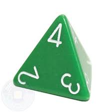
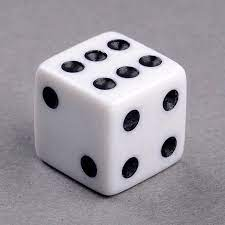
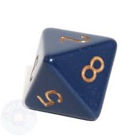
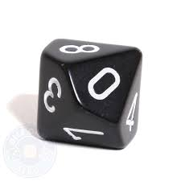
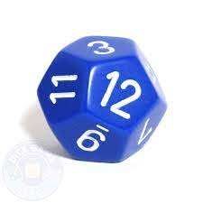
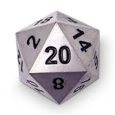

| Dice Picture | Highest Dice Number |
|---|---|
|  | 4 |
|  | 6 |
|  | 8 |
|  | 10 |
|  | 12 |
|  | 20 |
Pictured to the right is the type of dice used in Dungeons and Dragons., along with the highest number that die rolls.
The main die used in Dungeons and Dragons is the 20-sided die. This is used to make skill checks. However, specifically in combat, different weapons or spells will ask you to roll other dice in order to determine how badly you damaged the enemy.